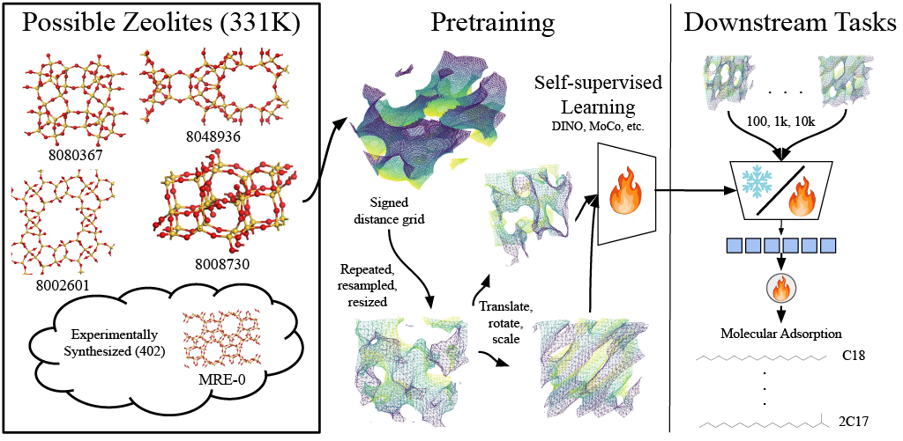

ZeoBench: A Benchmark for Self-Supervised Learning on 3D Zeolite Representations
|
 |
Abstract
Zeolites are an important class of porous crystalline materials with broad applications in gas storage, separations, and catalysis. Although hundreds of thousands of experimentally realized and hypothetical zeolite structures are known, identifying materials optimized for a target application remains challenging because property labels are expensive to obtain and available only for limited structure–molecule pairs. While prior work has demonstrated that 3D neural representations can predict zeolite properties effectively, it remains unclear which representation-learning strategies are most effective in the low-data regime relevant to materials discovery. We present ZeoBench, a benchmark for self-supervised learning on dense 3D representations of all-silica zeolites, and evaluate the resulting features on six existing downstream adsorption-property prediction tasks, across a range of training set sizes. Our study compares self-supervised 3D pretraining on volumetric zeolite data, adaptations of image-pretrained 2D ConvNets and vision transformers to 3D via multiview and channel-inflation strategies, and 3D ConvNets pretrained on out-of-domain volumetric datasets, alongside hand-crafted descriptors and supervised baselines. Using our pretraining and evaluation framework, we find self-supervised 3D representations outperform existing methods and achieve state-of-the-art performance across both in-domain label regimes and for the unseen domain of metal organic frameworks. Learned representations consistently outperform hand-crafted descriptors, and convolutional architectures are generally more effective than vision transformers in this setting. These results establish ZeoBench as a practical benchmark for 3D representation learning in zeolites and provide guidance for data-limited adsorption property prediction.